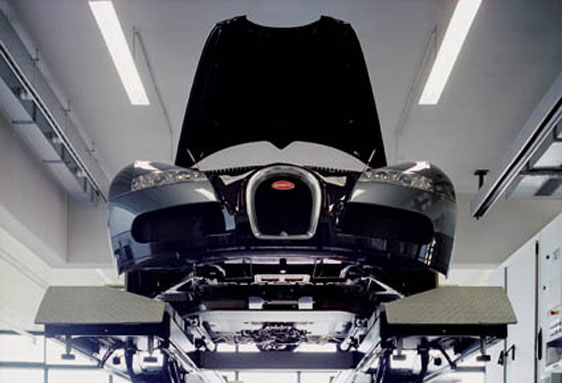

2001-2003 Development
From 2001 to 2003, Bugatti worked on making the Veyron a real car. The goal was to build a car with over 1,000 horsepower that could still be driven on public roads.
Engineers designed a powerful W16 engine with 16 cylinders and four turbochargers. Because the engine was so powerful, the car needed strong brakes, good cooling systems, and a body that could stay stable at high speeds. Many tests were done to make sure the car was safe and easy to control.
In 2003, Bugatti revealed the first Veyron prototype. This showed that the design worked and that the car was ready to move closer to production.
